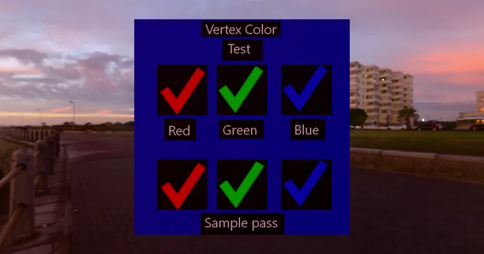

GLTF > Basic
Vertex Color Test - RedGPU WebGPU Example
Tests proper support for vertex colors (COLORS_0 attribute) in the viewer.
뷰어가 정점 색상(COLORS_0 속성)을 올바르게 지원하는지 테스트합니다.

GLTF > Basic
Tests proper support for vertex colors (COLORS_0 attribute) in the viewer.
뷰어가 정점 색상(COLORS_0 속성)을 올바르게 지원하는지 테스트합니다.
